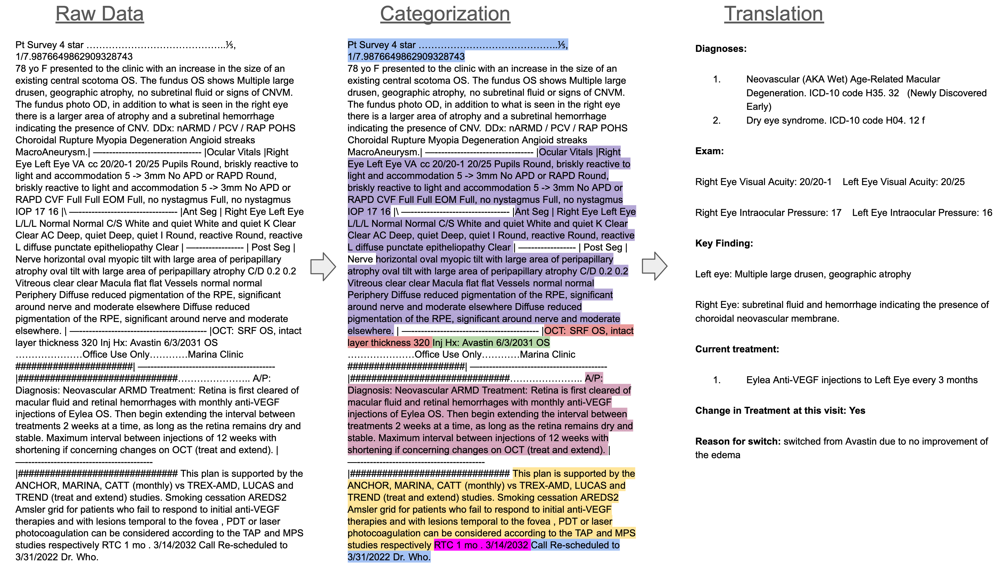

A: Medical Record Categorization & Translation
Customer A is a Data as a Service Company leveraging access to exclusive electronic health records (EHR) data to deliver up to date real world clinical insights to clients, driving business decisions for development and commercialization strategy.
To provide actionable evidence backed answers to their client's questions, Customer A partnered with us to train a model that could translate noisy raw unstructured data from a variety of EHR formats and output the relevant clinical findings & treatment plan in a structured json format of standardized categories and rationale for each clinical decision. Due to the sensitive nature of Customer A's data asset, all data needed to stay internal, prohibiting use of frontier models like ChatGPT.

In our first collaboration we leveraged the pretrained skills of large language models to finetune a 2B parameter model with 8K context using fewer than 500 examples to ignore irrelevant text, handle redundancy and categorize only relevant text (highlighted color coded lines, sensitive facts have been modified for privacy) from the raw data. We measured our efficacy using medical statistics including precision, recall and F1 score.
In our second collaboration with Customer A, we maximized the training utility of new clinician labeled medical records and further finetuned the same model from our first collaboration to translate the categorized text into the clinician's rationale for each treatment decision in laymens terms.
Although Customer A no longer had access to data from the first collaboration, we were still able to train the model in such a way as to build on the categorization task rather than replace it, resulting in a multi-task model with excellent precision, recall and F1 score in both tasks of categorization and translation. The resulting model is much lower cost to deploy than frontier models like ChatGPT, and owned exclusively by Customer A for their secure private internal use on sensitive data.
Training Compute Costs: $7.50/hr x 2 weeks = $2500
Data Processing Costs: 80M tokens x $10/1M tokens = $800
Engineering Costs: $700
Total: $4000